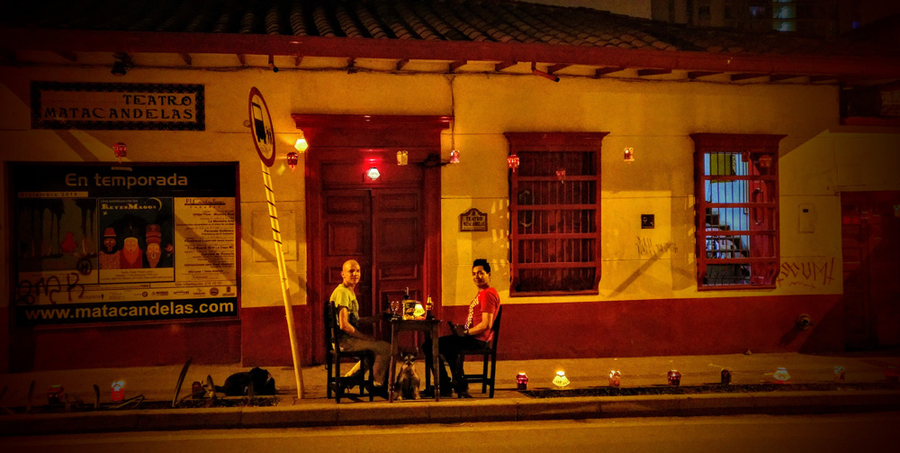
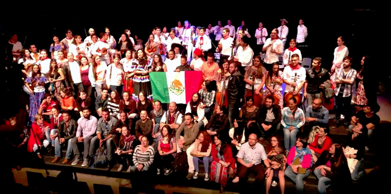

Nos merecemos estas vacaciones
“Tener una casa es tener un estilo para combatir el tiempo. Combatir al tiempo sólo se logra si a un esencial sentido de la tradición se une la creación que todavía mantiene su espiral, que no ha dejado aún de transcurrir. EL QUE TIENE UNA CASA TIENE QUE SER BIENQUISTO, PUES LA CASA PRODUCE LA ALEGRÍA DE QUE ES LA CASA DE TODOS” (José Lezama Lima)

Se camelló muy fuerte en este 2016, iniciamos ofreciendo una nueva y bonita sala de teatro a la ciudad y cerramos el año obteniendo un importante estímulo para dotación de luces y sonido. Por otra parte al director del Teatro Matacandelas le fue otorgado el premio Vida y Obra, concedido por la Secretaría de Cultura de Medellín. En un año de muchas ausencias y horrores, nos obstinamos en creer y crear, de mantener abierto este espacio para el ritual de la representación y la música.
Por aquí estuvieron:
PEQUEÑO TEATRO: Emily Dickinson, TEATRO FRASTRICIDA: El atravesado, Edgar Allan Poe o el método de la descomposición CASA DE TEATRO (R. DOMINICANA): A veces grito, Él canta yo cuento, LA BARRICADA TEATRO: Entre el Cauca y la carretera, PROYECCIÓN ESTADA: Medea all-star, CASA DEL TEATRO: No abras el baúl cuando llegues, LA RUEDA FLOTANTE: Días de ayuno, X2 TEATRO (MANIZALES): Simplemente José, TEATRO GALPÓN DIABLO MUNDO (ARGENTINA): Gracias por el después, Yo clown, ZERO O NO ZERO (ECUADOR): Medea llama por cobrar, TEATRO CASA TALLER: La tercera mitad, DELIRIO TEATRO: Psicosis 4:48, DOCTORA APETITO: Mi amor en tres, CICUTA TEATRO (PEREIRA): Del desierto, TRISCERAL ARTE ESCÉNICO (ECUADOR): Ruinas, COLECTIVO TEATRAL MATACANDELAS: Pinocho, La casa grande, Presentación libro Matacandelas 36 años, Primer amor, Angelitos Empantanados, Juegos nocturnos 2, Fernando Gonzales- Velada Metafísica, Fiesta (títeres y música), O Marinheiro, Cena de navidad en el bosque encantado, RED CEPELA: Lanzamiento libro, Conocer el conflicto para construir la paz, La paz en boca de todos, JULIÁN ARBOLEDA: Los caballeros las prefieren locas, MALAS COMPAÑÍAS: Solo ella, CORPORACIÓN CULTURAL NUESTRA GENTE: Ventana al cielo, VANGUARDIA FEST-ROCK: León Maya, FIESTA DE LAS ARTES ERÓTICAS: Divina obscenidad, Títeres porno, Gozo vital, El gurú del porno, Jacobo Franco, Dj Willy Agudelo, Fernando Arias, Steve Arias, DESTROYER 666 (AUSTRALIA): Concierto, SAVAGE AGGRESSION: Concierto, PUERTO CANDELARIA: Mozart y Beethoven visitan, LA COFRADÍA (Escuela Teatro Libre): Miguel de Cervantes, CALENTURA LATINA: Dj. Flako Trujillo, PEDRO PASTOR Y LUIS PASTOR (ESPAÑA): Concierto, 5to BAZAR DE LA MÚSICA INDEPENDIENTE: Bandas: Agatha I, C15, Capitán Rocksteady y la Tripulación, Vc4, Asuntos Pendientes, Pasocanela, Donna Pierrot, Feralucia, FESTIVAL NOCHES DEL PACÍFICO: Taller en creación de danza tradicional- Francisco Tenorio, Manglaria- ritual de velorio, Taller de Marimba- Juan Carlos Mendinero, Taller de Marimba: Identidades en polirritmias- Hugo Candelario, Túmac Y Kilele Ensamble- Fiesta del pacifico, ESTEMAN: Bazar y concierto, COMPAÑÍA TEATRAL MUJERES AL BORDE: Memorias vivas,

THY ANTICHRIST: Concierto, INFERNAL- INWAVES – SPASTICO - YAK: Concierto, BALLET FACTORY: No hay mayor belleza que la pureza del alma, PABLO VILLEGAS: taller de Música, DEMENCIA LIBERTARIA, SOCIEDAD DECADENTE, TIRO DE GRACIA, DEVASTACIÓN: Concierto, SURAMERICA: Concierto, THE GLORIOUS DEATH (ESTADOS UNIDOS), HELLBREACKER, CASKET GRINDER, MORBID MACABRE: Concierto, QUINTETO DE CUERDAS BABALÚ: Cuba sobre cuerdas, KRITAN REGGAE: Concierto, SIGUARAJAZZ: Lanzamiento LP, CONCILIO: Música antigua / Músicas del mundo, CORPORACIÓN ESTANISLAO ZULETA: Desaprender la guerra, formarse para la paz, SIN FRONTERAS: LA MONTAÑA GRIS- FILARMÓNICA DEL SANTUARIO: Paseo Sinfónico, RIOT V, AXE STEELE: Concierto, CANTAUTOR ANDRES CORREA: Concierto, ORQUESTA FILARMONICA DE EL SANTUARIO: Concierto de Aranjuez, XXII FIESTA DE LAS ARTES ESCÉNICAS, MOLIENDA TEATRAL: Jaime Jaramillo Escobar, Movimiento Inesperado Danza, Katerine Pombo, Oficina Central de los sueños, Ocarina, Teatriados, Infusion Colectivo Teatral, Elemental Teatro, Grupo Clown La Polilla, Yarit Roll, Circo de la Rua, Yaiza de Corazón, Gamma, Jabrú, Utopic Circus, LUIS OSPINA: Todo comenzó por el fin, COMPAÑÍA REGIONAL DE TEATRO DE PORTUGUESA (VENEZUELA): Robinson en la casa de Asterión, UMBRAL TEATRO (BOGOTÁ): Donde se descomponen las colas de los burros, TEATRO Y COCINA: Carlos Mario Gallego (Mico), FRIVOLIDAD: Los diez más pobres del mundo, GORZY EDU: El Percusionista, CLAUSURA XII FIESTA DE LAS ARTES ESCÉNICAS: La Recontra, MARWAN (ESPAÑA): Concierto, CORPORACIÓN OTROCUENTO: Cuentos de la totuma, TEATRO EL GRUPO: Amores imposibles, SON DEL BARRIO: Jam Latino, NUH JAY: Concierto música medicinal, VII FESTIVAL FLAMENCO: Juan de la Rubi, Pedro Chacón y la bronce, LA ESPADA DE MADERA (ECUADOR): El tío Carachos, Cristobita el de la porra, VII FESTIVAL FLAMENCO: Pedro Chacón y la bronce, III FESTIVAL INTERCULTURAL DE TEATRO CONTARLA PARA VIVIR: Noche de clausura, TLALOQUE (MÉXICO): Tiradero a Cielo abierto, LA GUANEÑA Y SON DIFERENTE: Aniversario Tibiri Bar 24 años, HEAVEN AND HELL FESTIVAL HISTORICO: Concierto, SINFÓNICA BINACIONAL MEXICOLOMBIANA: Festival internacional de música de El Santuario, FUCK COLDPLAY: tributo a ZZ Top, MILAGROS (ESPAÑA): Concierto, LA COMPAÑÍA: La Mano, DIEGO ROJAS JAZZ TRIÓ: Latidos concierto, FESTIVAL COMUNITARIO DE TEATRO JOVEN, II FESTIVAL INTERNACIONAL DE FOLCLOR, CIRCULART: Inauguración y clausura, BULEVAR DEL CINE: Agenda cultural de la comuna 10 Presupuesto Participativo, ATOMOS- INVASORES- SEÑOR NARANJO- KAMEÑ ROCK: Concierto, DECIBELES: Muestra académica, MUSEO DE ANTIOQUIA: Vida nocturna y gastronomía en el centro, CESDE: Muestra gastronómica estudiantes, URBAN FLOW: Muestra final, FINAL ROUND COPA MC: concierto hip hop, CARNAVAL DE RIOSUCIO: Encuentro de Carnaval, somos familia Infernal, LA MONTAÑA GRIS: Los 9 mundos desconocidos, EDNA AGUILAR (MÉXICO): Instrucciones para fingir desmayo, PARADOXUS LUPORUM (ESPAÑA): Concierto.
Y el grupo Matacandelas se proyectó con sus obras en: Festival iberoamericano de teatro (Bogotá), Festival Enitbar (Barranquilla), Marinilla, Ciénaga, Santa Marta, Carmen del Viboral, Pasto, Riosucio, Mosquera, Bucaramanga, Manizales, Bojayá, Murindó, Riosucio (Chocó), Cali.